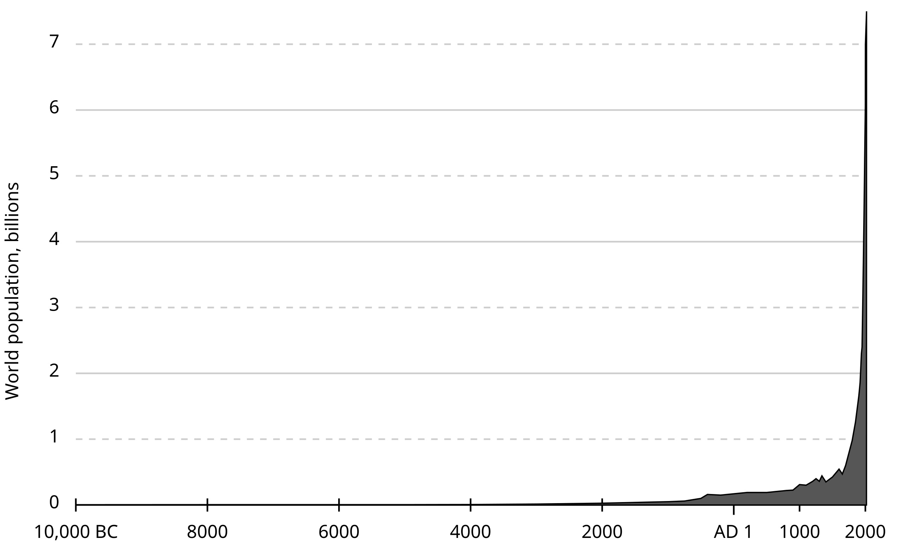
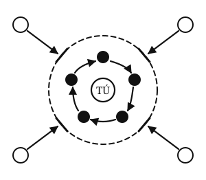

Tema 13 · Percepción, desinformación y posverdad
Por convención lo dulce y por convención lo amargo; por convención lo caliente, por convención lo frío, por convención el color; pero en realidad, átomos y vacío.
—Demócrito de Abdera, vía Sexto Empírico, Contra los matemáticos, VII, 135 · traducción de Claude, del griego
Si combates a todas las sensaciones, no te quedará ni siquiera aquello a lo que referirte para juzgar cuáles de ellas dices que te han engañado.
—Epicuro, Máximas capitales, 23 · traducción de Claude, del griego
§49 · Percepción y memoria
La percepción. Más allá de la secular discusión sobre si nacemos dotados de algún conocimiento o información o no —recuerda las ideas innatas de los racionalistas o la tabula rasa de los empiristas—, lo cierto es que nuestra consciencia y conocimiento del mundo provienen de nuestra percepción. Llenamos la memoria con aquello que vemos, oímos, olemos, tocamos y, a fin de cuentas, experimentamos.
Pero no somos unas máquinas de registro pasivas de la realidad. De hecho, la diferencia entre lo que hay frente a nosotros, lo que captan los sentidos y lo que procesamos como percepción es abismal. Hasta el punto en el que cualquier parecido con la realidad puede parecer mera coincidencia.
Lo que sucede es que las percepciones son el resultado de un largo y complejo procesamiento en el que intervienen no solo nuestros limitados sentidos, que solo perciben una muy reducida parte de lo que sucede ante nosotros, sino que nuestro cerebro añade, completa e interpola información. Y no siempre basado en la relevancia objetiva de la misma, sino en función de las emociones y de la atención.
¿Podemos fiarnos de nuestros ojos para dotarnos de un conocimiento correcto del mundo sobre el que erigir nuestras ideas, pensamiento y razones? Sabemos que en diversas ocasiones nos fallan. Es el caso de las alucinaciones o de esa persona a la que saludas en la distancia por la calle para descubrir, cuando se acerca, que no era quien tú pensabas y has saludado a un desconocido.
La memoria. Una vez que percibimos datos y hechos los almacenamos en nuestra memoria. Una vez allí se convierten en recuerdos, que son la materia prima de nuestros razonamientos y argumentaciones.
La memoria, sin embargo, no es un registro pasivo y objetivo de la realidad vivida. Disponemos de diversos tipos de memoria que utilizan diversos lugares del cerebro para fijarse, que gestionamos de distinta forma y que olvidamos de forma distinta.
La memoria, como la percepción, es un constructo, no el registro fidedigno e inequívoco de unos hechos. Cada vez que recordamos algo estamos re-creando, actualizando y agregando detalles, como en el juego del «teléfono escacharrado». Los recuerdos cambian con el tiempo, se desvanecen, olvidamos detalles cruciales, combinamos distintos recuerdos en uno, se ajustan para cuadrar con nuestra narrativa interna y no podemos distinguir los recuerdos reales de recuerdos falsos o incluso implantados. La conexión emocional y la necesidad de dar sentido a las cosas, además, influye decisivamente en qué recordamos y cómo lo hacemos.
Siendo así, ¿cómo podemos fiarnos de nuestra memoria para razonar correctamente? Sin verificación externa no podemos confiar en que nuestros recuerdos se ajusten a los hechos. Seguro que alguna vez te habrá pasado viendo fotos de hace algunos años que no recordabas que cierta persona había ido a aquella excursión o estabas convencida de que llevabas una ropa distinta, pero la foto te hace refrescar y actualizar la memoria.
§50 · De la escasez a la sobrecarga: información y conocimiento
Estamos inmersos en un huracán de información, en gran parte debido a las tecnologías informáticas que ponen delante de nuestros ojos un flujo constante de noticias, vídeos y stories en el que nos sumergimos de forma casi inevitable.
Pero no siempre fue así. De hecho, vivimos en una época totalmente excepcional, tanto que es casi imposible de concebir. Considera estos hechos y ve visualizando cuán distintas eran las sociedades anteriores a la nuestra.
Los humanos surgimos hace al menos 250 000 años, y desde entonces hasta el año 1804 aproximadamente no llegamos a los mil millones de pobladores en nuestro planeta, como puedes ver en la siguiente figura.

Así que durante casi toda nuestra Historia hemos sido pocos, muy pocos, repartidos por una enorme superficie, comunicándonos cara a cara y viajando a pie o a caballo. Y casi nadie sabía leer: la escritura surgió hacia el 3200 a. e. c. en Mesopotamia, pero la alfabetización general y la educación pública obligatoria son cosa de anteayer. La imprenta de tipos móviles data de 1440; los primeros periódicos diarios, del siglo XVIII; la World Wide Web, de 1991, y el smartphone, de 2007.
Con todo esto, imagina el acceso a la información que ha tenido la humanidad a lo largo de su historia. O, más bien, su ausencia de acceso. Platón (427-347 a. e. c.) solo habría podido leer unas decenas de libros en su vida. Nosotros tenemos más información en el teléfono móvil —incluidas las obras del propio Platón— que la que seríamos capaces de leer en miles de vidas. En principio, disponer de (casi) todo el conocimiento generado por la humanidad —ciencia, arte, entretenimiento— es algo bueno, ¿verdad? Claro, si todo ese conocimiento fuera verdadero o útil y si lo aprovecháramos debidamente. Y aquí es donde empiezan los problemas.
La información no es conocimiento. Disponer de acceso a la información no se traduce automáticamente en individuos más eruditos o más sabios. Que esté ahí no implica que podamos comprenderlo o que tengamos tiempo para aprovecharlo. La información por sí misma no es conocimiento; no lo es hasta que la comprendemos y la integramos. Yo no soy capaz de comprender la mecánica cuántica o matemáticas avanzadas, y pese a que los recursos necesarios para comprenderlas están en Internet, tendré que tener interés y tiempo suficiente para poder aprenderlas… a costa de quitárselo a otros conocimientos o disciplinas. Nadie puede ver una representación de todas y cada una de las obras de teatro que se han escrito, ni escuchar toda la música que se ha grabado ni leer todas las novelas que existen.
Detrás de toda información hay una intención. No toda la información a nuestra disposición es desinteresada. Ya sabrás por la asignatura de lengua que el emisor tiene un propósito cuando comunica su mensaje. Esa intención puede ser la de ampliar el conocimiento del receptor y educarlo, pero en tantas ocasiones pretende venderle algo; convencerlo de una idea política o religiosa; diseminar información falsa o tratar de embarrar la verdadera; o, simplemente, aprovecharse de la facilidad de publicar la información para llenar la red de información inútil.
§51 · La desinformación, la sobreinformación y la posverdad
A este respecto tenemos los fenómenos de la desinformación, la sobreinformación y la posverdad, que existen desde que existen las personas, pero que han adquirido otra cualidad gracias a los medios de comunicación de masas y a las redes sociales. Los tres son fenómenos muy peligrosos y que pueden sumirnos en la falsedad, el engaño y el prejuicio.
La desinformación. Consiste en la diseminación de información falsa a sabiendas de que lo es con la intención de engañar, confundir y manipular tanto las creencias como las emociones y las opiniones de la opinión pública.
La desinformación se parece mucho al contraespionaje. Cuando en 1944, durante la Segunda Guerra Mundial, los Aliados planearon el desembarco de Normandía, en Francia, sabían que era fundamental que el ejército alemán no supiera de antemano ni el lugar exacto ni la fecha de la mayor operación militar anfibia de la historia. Y de dicho desembarco dependía la victoria aliada; la apuesta y el riesgo eran inmensos. Para averiguar cuándo sería el Día D, los espías alemanes trataban de robar información de los Aliados por todos los medios posibles, que, a su vez, trataban de ocultarla a los ojos de los espías alemanes. Hasta ahí, todo resulta entendible. Pero no era suficiente. Los Aliados crearon publicaciones, transmisiones de radio y toda clase de información falsa para confundir a los espías. Así, la verdadera fecha del Día D no solo la conocían unos pocos generales aliados, sino que los espías se encontraban con muchísima información falsa y que no podían verificar. Los Aliados llegaron a construir un campamento falso al sur de Inglaterra con falsos tanques hinchables de goma, movimientos de tropas y un sinfín de detalles. Eso es desinformación.
Ahora piensa en cómo los políticos, los líderes de grupos religiosos, los medios de comunicación de masas, las redes sociales y otros agentes interesados diseminan información falsa para ocultar la verdadera o engañarnos. Muchas veces niegan la evidencia, pero tantas otras no se molestan siquiera en hacerlo; en su lugar nos inundan con información falsa y nos dejan sin saber qué pensar, en el mejor de los casos, o llenos de ideas falsas, habitualmente.
¿Y por qué iban a engañarnos? Los motivos son muy diversos. Por ejemplo, obtener poder, dinero, influencia o estatus.
La sobreinformación. Actúa por fatiga. Demasiada información nos puede sumir en la confusión, y no tan solo cuando esta información es falsa, como acabamos de tratar con la desinformación. Aunque la información fuera toda verdadera, un exceso de información acaba haciéndonos insensibles ante esta. Además, en este exceso es más fácil colar falsedades y mentiras; bulos y prejuicios; generalizaciones y sobresimplificaciones.
Piensa en el exceso de cobertura informativa que se da a algunos temas concretos, que están todo el día en los informativos y en los periódicos. Llega un momento en el que nos hartamos del tema y, en lugar de activarnos ante, por ejemplo, una injusticia social, puede empezar a molestarnos que se le dé tanto protagonismo, lo que nos puede llevar a la pasividad o incluso a oponernos a lo que inicialmente nos parecía injusto.
La posverdad. Consiste en la negación de la verdad y de los hechos, y su sustitución por apelaciones identitarias, la factura de «hechos alternativos» y la exacerbación de los sentimientos. Dicho de otra manera, para quien adopta un marco de pensamiento de posverdad importa más lo que crea su grupo, sus propias opiniones y lo que sienta que los datos, los hechos y la verdad.
El concepto mismo de hechos alternativos constituye un oxímoron que resulta muy chocante. Las cosas han sucedido o no han sucedido, ¿verdad? Naturalmente, podemos comprender que existan distintas interpretaciones, juicios o valoraciones sobre los hechos. O que cada testigo de un hecho tenga versiones distintas de lo que vio porque tenía una perspectiva distinta y todo un sistema perceptivo, cognitivo y axiológico1 propio. Pero los hechos son, eso, hechos2. Diversos individuos podrán añadir detalles diversos, pero todos tendrán que pertenecer a la categoría de cosas que pasaron o que no pasaron, sin añadir lo que no hubo. Pues bien, los hechos alternativos implican que existen hechos distintos a los que, normalmente la mayoría, conoce. Es decir, tú tienes tus hechos y yo los míos. No se refieren a que yo tenga valores, gustos o filtros propios que generen una opinión distinta sobre unos mismos hechos, sino que los hechos mismos son otros, distintos, ajustados a mi perspectiva, mi identidad o mis sentimientos. Como es comprensible, ni yo ni nadie podemos rebatir tus hechos, ya que no tenemos tus opiniones ni tus creencias. Así que quien defiende una versión alternativa de los hechos está creando una realidad paralela en la que puede esconderse como en una fortaleza en la que no entra el sentido común.
Esta creación de una realidad paralela suele encajar con una identidad ideológica —política o religiosa, por ejemplo—, por lo que se sostiene en común con otros, los míos, que creen las mismas cosas. En ocasiones surgen por la desconfianza en los poderes tradicionales, incluida la ciencia, que son vistos como interesados —y lo son— y con intención de engañarnos.
Además, la posverdad apela a los sentimientos y a las emociones. Nuestro sistema cognitivo está conectado con nuestro sistema emocional de forma que reaccionamos ante las ideas. Estar enfadados con alguien u odiarlo aumenta espectacularmente las probabilidades de que rechacemos sus ideas y sus propuestas, incluso aunque pudieran ser beneficiosas para nosotros. De la misma manera, sentirnos parte de un grupo y querer seguir formando parte de él aumenta las probabilidades de que nos creamos sus ideas, incluso cuando son patentemente absurdas o niegan la realidad.
Los hechos alternativos no suelen aparecer sueltos. En muchas ocasiones están ligados a sistemas alternativos de creencias, como ocurre con tantas teorías de la conspiración. No es extraño que negar que el hombre haya pisado la Luna vaya unido a la creencia de que los extraterrestres están entre nosotros, que las vacunas sirven para controlar a la población o que la Tierra es plana.
§52 · Sesgo de confirmación, cámaras de eco y burbujas
¿Cómo es posible que algunos individuos desafíen algunas de las más sólidamente establecidas conclusiones de la ciencia, como que la Tierra es esférica o que evolucionamos por selección natural?
Podríamos apelar directamente a la ignorancia y a la falta de educación, y eso explicará gran parte de la conspiranoia, pero hay personas muy formadas y educadas que están convencidas de algunos hechos alternativos. En estas personas, como en todos los demás, operan algunos principios que distorsionan nuestra percepción, interpretación y valoración de los hechos.
En primer lugar, no almacenamos hechos en la mente como pequeños ladrillos en el archivador de nuestra mente. Nuestros recuerdos, nuestros contenidos mentales, no son entidades aisladas de las demás que mantienen su forma, sino que están integradas en sistemas de creencias. Es decir, que nuestras ideas dependen de cómo encajan con las que ya conocíamos y se adaptan a ellas. Además, las nuevas ideas transforman el sistema de creencias, con lo cual hay una relación dinámica entre el conocimiento previo y el recién adquirido.
En segundo lugar, operan en nosotros multitud de sesgos cognitivos y heurísticos que amplifican algunas de las condiciones en las que los seres humanos recibimos e interpretamos la información y cómo esta se transmite en la era digital. Veremos tres de estas condiciones.
El sesgo de confirmación. Lo definiremos más adelante, junto a los demás sesgos cognitivos (§59); lo que aquí nos importa son sus efectos, que aumentan cuando se trata de creencias que percibimos como importantes —impuestos, interrupción voluntaria del embarazo—, emocionalmente intensas o muy arraigadas.
El sesgo de confirmación nos mete en un bucle negativo en el que tendemos a confirmar nuestras creencias, ignorar las pruebas de su inadecuación y nos aísla en nuestra propia cámara de eco.
Las cámaras de eco. Se producen en los medios de comunicación y en las redes sociales. Consisten en ecosistemas cerrados y aislados de otros ecosistemas en los que la información reverbera, se refuerza y se amplifica al tiempo que escapa al cuestionamiento que provenga del exterior. De ahí su nombre; imagina un túnel en el que gritas y tu voz resuena, repitiendo una y otra vez lo que has dicho. Las cámaras de eco pueden llevar a la polarización y el extremismo social y político.
No nos introducimos en cámaras de eco necesariamente de forma voluntaria. En ocasiones el ambiente de nuestra socialización puede suponer que nos hayamos criado en una. En todo caso, tampoco suelen ser circunstancias de las que no podamos escapar. Lo difícil es encontrar la manera de romper el círculo por algún lado.

La burbuja informativa o de filtro. Es el resultado de los algoritmos de búsqueda y de los patrones de uso de los usuarios de Internet y de las redes sociales. Como bien sabes, Google, Facebook, Instagram y otros servicios de búsquedas en Internet y de redes sociales realizan perfiles de sus usuarios3 con el fin de vender publicidad dirigida. Las empresas de publicidad valoran mucho que su mensaje llegue no a todo el mundo, sino a las personas que son su público objetivo o a quienes pueden ser buenos clientes. Para eso necesitan información de quiénes somos, qué intereses tenemos y qué tipo de compradores somos. Las empresas tecnológicas se dedican a recoger toda clase de datos de nuestro uso de Internet y a vendérselo a esas compañías publicitarias, que a su vez hacen los anuncios que pagan sus clientes. Es decir, que parte de los anuncios que ves son distintos a los que veo yo. Pongamos que estoy viendo un vídeo en YouTube y que llega el molesto corte para un par de anuncios. Yo recibiré publicidad sobre productos y servicios para varones cuarentones de mi poder adquisitivo con mis hobbies e intereses. Si el vídeo lo estuvieras viendo tú, las ofertas se ajustarían a tu persona.
¿Esto qué consecuencias tiene? Si el fenómeno de la burbuja informativa se limitara a la publicidad y el comercio, quizás no demasiadas. Pero la publicidad es solo el ejemplo con el que se entiende bien: afecta a otras muchas áreas de nuestra actividad en Internet, desde las búsquedas hasta las selecciones de noticias que recibimos.
Lo que vemos en Internet es distinto según quién seamos. No, como hemos tratado hasta ahora, porque nuestros prejuicios y nuestros conocimientos previos afecten a cómo procesamos la información, sino porque antes incluso de llegar a esa fase del proceso de adquisición de nueva información, vemos información distinta: el teléfono móvil y el ordenador nos muestran cosas distintas a ti y a mí. Lo que sucede es que estamos mirando cosas distintas aunque no queramos4.
A diferencia de las cámaras de eco, la burbuja informativa no la construimos nosotros: es una consecuencia de la forma en que Internet y las redes sociales están configuradas. En una cámara de eco hay decisiones —tuyas o del ambiente en que te criaste— y, si las buscas, puedes verlas y romper el círculo; la burbuja la levanta un algoritmo, y ni la elegiste ni la ves.
En todo caso, se trata de un fenómeno novísimo y aún falta mucha investigación al respecto, por lo que debemos tomar este concepto con cierta distancia, por el momento.
§53 · Cómo se forma una opinión: dos casos
¿Puedo evitar la influencia de todo esto? Puede que todos estos factores —desinformación, sobreinformación, posverdad, sesgo de confirmación, cámaras de eco y burbujas informativas— se te hagan bola. Algunos se parecen a otros, aunque cada cual sea distinto, y todos operan a la vez. No se trata de que concluyas que todo Internet es un fraude ni que estamos manipulados por fuerzas que no controlamos: se trata de que tengas noticia de estos fenómenos y empieces a ver cómo afectan a tus creencias y opiniones. Solo así podrás combatirlos, si quieres.
El caso del cambio climático. Veamos ahora un ejemplo en el que podrás ver cómo interactúan todos estos factores para configurar nuestros juicios sobre los hechos.
El cambio climático de origen humano es un caso extraño: no hay discusión científica que valga —el consenso se apoya en miles de estudios independientes y en los informes del IPCC desde 1988—, y sin embargo la conversación pública sigue pareciendo una pelea entre dos bandos con las mismas cartas. Ese desajuste entre lo que se sabe y lo que se discute es justamente el objeto de este epígrafe.
Plantéate qué sabes del asunto y de dónde lo has sacado. ¿Está ocurriendo? ¿Lo causamos nosotros? ¿Es grave? ¿Quién sale ganando si te lo crees, y quién si no? Fíjate ahora en cómo actúan los factores que hemos tratado:
- Desinformación. No es solo ruido espontáneo: hubo campañas pagadas. Las grandes petroleras conocían por sus propios estudios internos, ya en los años setenta y ochenta, el efecto que tendrían las emisiones, y financiaron después durante décadas a quienes sembraban dudas. La estrategia —y a veces las mismas agencias— era la que la industria del tabaco había usado para retrasar la relación entre fumar y el cáncer: no hace falta demostrar que la ciencia se equivoca; basta con que parezca que aún no se ha decidido.
- Sobreinformación. Cada ola de calor, cada cumbre del clima, cada informe, cada gráfico y cada portada. El volumen es tal que se vuelve ruido, y el ruido cansa: mucha gente acaba desconectando de un problema del que oye hablar todos los días.
- Posverdad. «El clima siempre ha cambiado» es una frase verdadera empleada para sostener algo falso. Cuando el terreno se desplaza de los datos al relato, deja de importar qué está pasando y pasa a importar qué dice de ti creerlo o no creerlo.
- Sesgo de confirmación. Un invierno especialmente frío te confirmará que todo es una exageración; un verano tórrido, lo contrario. Cada uno se queda con la anécdota que le encaja y descarta la que no.
- Cámaras de eco. Las cuentas que sigues, los medios que ya conocías y el grupo en el que participas repiten el mismo argumento; nada de fuera entra, y lo que no entra parece que no existe.
- Burbujas informativas. Los algoritmos aprenden qué vídeos y qué titulares te retienen, y te sirven más de lo mismo hasta que tu pantalla parece el mundo entero.
Y fíjate bien en lo que acabamos de hacer: no hemos discutido si el cambio climático es real —de eso se ocupa la ciencia, y ya lo ha hecho—, sino cómo se ha formado tu opinión sobre él.
El caso de Ceuta. El anterior te enseña cómo se forma una opinión cuando el conocimiento ya está asentado y la conversación pública, en cambio, sigue pareciendo un empate. Este enseña otra cosa: cómo se forma una opinión mientras los hechos todavía se están moviendo.
El 30 de julio de 2026, decenas de miles de personas cruzaron a Ceuta desde Marruecos en cuestión de horas. Entre lo que puso aquello en marcha había una creencia: que España había abierto la frontera y que no habría devoluciones. Era falsa. Y lo que interesa aquí es de dónde salía, porque no era una mentira inventada, sino un hecho verdadero mal leído. Un mes antes, el 29 de junio, el Tribunal Supremo había establecido que a quien es interceptado en el mar no se le puede aplicar el rechazo en frontera y que hay que seguir otro procedimiento de devolución; la sentencia decía cuál es el procedimiento correcto y advertía expresamente de que eso no impide devolver a nadie5. El salto del «hay que hacerlo de otra manera» al «no lo van a hacer» no lo dio ningún tribunal: lo dio la cadena de mensajes que llevó la noticia6.
Ya conoces la figura: es la misma de «el clima siempre ha cambiado», una afirmación verdadera puesta a sostener algo falso. Lo que cambia es la velocidad, y aquí se puede medir: la sentencia se hizo pública el 8 de julio y circuló tres semanas casi sin eco, unas diez publicaciones al día; el 30 de julio se publicaron seiscientas noventa y cinco.
Fíjate en tres cosas que este caso enseña y el anterior no:
- Las cifras no cuadran, y ninguna miente. Sesenta mil, setenta mil, ochenta mil, según la fuente y según el día en que se contara. No eran versiones interesadas: eran estimaciones de momentos distintos hechas con métodos distintos. Ver cómo una cifra se consolida enseña más sobre cómo se sabe algo que recibirla ya consolidada.
- Los bulos circularon en las dos direcciones. Hacia quienes cruzaban y hacia el público español y europeo, con vídeos antiguos, grabaciones de otros países e imágenes generadas con inteligencia artificial.
- El patrón dominante no era inventar una imagen, sino tomar una real y cambiarle el contexto. Es el bulo que ningún detector automático encuentra, porque la imagen es auténtica: lo falso es el pie.
Y hay una cuarta, que es la más difícil. Días después circuló el informe de una empresa privada de análisis de fuentes abiertas que concluía que la movilización había sido una operación coordinada. Puede que sí y puede que no —eso, cuando leas esto, quizá ya se sepa—; lo que aquí importa es qué haces tú con una tesis así mientras no se sabe. Preguntar quién la firma, con qué método y qué gana con que te la creas no es desconfiar por sistema: es el ad verecundiam (§59) mirado por dentro.
Y otra vez lo mismo: no hemos preguntado si aquello estuvo bien o mal, ni qué debería hacer nadie. Hemos preguntado cómo te enteraste, qué diste por hecho sin comprobarlo y cómo sabrás, dentro de un año, si te habías equivocado.
Ahora trata de hacer tu propio análisis de otros temas: la avalancha de bulos durante la pandemia de COVID-19, que la Organización Mundial de la Salud llamó infodemia; una guerra que esté sucediendo mientras lees esto; el movimiento antivacunas; tu decisión de comer o no carne; o tu convicción de que la Tierra es esférica.
Condiciones para contrarrestarlos. Ten en cuenta que todos estos efectos no funcionan en la misma medida para todos todo el tiempo. Podemos contrarrestar temporalmente o incluso anular muchos de ellos, para lo que deben darse las siguientes condiciones:
- Conocer la existencia de todos estos y otros mecanismos cognitivos y de la influencia que tienen en nuestras posturas, opiniones e ideas.
- Realizar el esfuerzo cognitivo de pararnos a analizar cuáles y cómo operan sobre nosotros en cada uno de los asuntos concretos que consideremos.
- Querer tener la opinión mejor formada posible y no dar por hecho que ya hemos alcanzado el conocimiento definitivo sobre ningún tema.
- Consultar distintas fuentes, aunque inicialmente nos causen rechazo, para formarnos una idea más completa de los fenómenos, aunque nuestra comprensión siempre será incompleta.
- Someterse voluntariamente a «dietas» de medios y redes sociales, elegir con cuidado a quién seguimos y en qué redes participamos, y conocer los medios informáticos que reducen nuestra exposición a las burbujas.
- Aumentar nuestros conocimientos generales, para poder calibrar mejor la calidad de las fuentes y disponer de herramientas cognitivas para procesar mejor la información.
Este es, en fin, el nuevo paradigma del conocimiento en el que nos toca desenvolvernos y al que tendremos que adaptarnos, ya que tiene enorme influencia en nuestro pensamiento, nuestro comportamiento y lo que nos acontece.
Es decir, que tiene sus propios valores, que influyen también en lo que percibimos y en cómo lo recordamos.↩︎
Sin embargo, el término hecho sugiere artificiosidad, que alguien haya actuado para hacer algo, a diferencia del término dato, que sugiere algo dado, no creado.↩︎
Más aún: Google tiene un dossier tuyo aunque nunca hayas usado su buscador ni su correo. ¿Cómo? Porque tu manera de navegar tiene patrones distintivamente tuyos y tu hardware, rasgos que lo distinguen de los demás. ¿Y si te vas a un cibercafé de Nepal? Mala suerte: detectará que alguien en Nepal entra en las páginas en las que sueles entrar tú y seguirá engrosando su dossier. Y las webs que visitas te rastrean con código oculto en la publicidad.↩︎
Puedes hacer la prueba con un amigo que se conecte desde otra red, que viva en otro país o que tenga una edad muy distinta a la tuya: buscad lo mismo en Google y comparad. No todos los resultados diferirán en el mismo grado —depende de los temas y de las palabras—, pero las palabras, al menos para el experimento, han de ser las mismas. Prueba con «viaje a Egipto».↩︎
Tribunal Supremo, Sala de lo Contencioso-Administrativo, Sección Quinta, sentencia núm. 814/2026, de 29 de junio de 2026 (recurso de casación 3795/2025; ECLI:ES:TS:2026:2965), hecha pública el 8 de julio: la disposición adicional décima de la Ley de Extranjería no ampara el rechazo en frontera de quien es interceptado en el mar, y procede el cauce del artículo 58.3, sin que esa calificación impida la devolución inmediata si se respeta el procedimiento reglamentario.↩︎
El recorrido está documentado. Maldita.es analizó 1.171 publicaciones en árabe sobre la sentencia entre el 8 y el 31 de julio de 2026, de 727 usuarios distintos, y encontró que un mismo texto —«no habrá expulsión inmediata de los migrantes que lleguen a nado»—, que omitía justamente el procedimiento de devolución, se compartió 215 veces el día 30. Maldita.es, «La sentencia del Tribunal Supremo sobre las “devoluciones en caliente” en Ceuta y Melilla: preguntas y respuestas» (5-08-2026) y «De la sentencia del Tribunal Supremo sobre Ceuta a la idea de una frontera abierta» (6-08-2026). https://maldita.es/investigaciones/20260806/tribunal-supremo-sentencia-ceuta-marruecos-facebook/↩︎